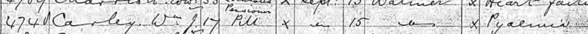
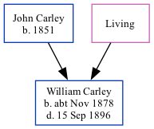

William James Carley cNov 1878 - 1896
[ Home ] | [ Calendar ] | [ Surnames Index ] | [ Family History ]The child of John Carley (a blacksmith) and Ann Boodle, William Carley, the second cousin twice-removed on the mother's side of Nigel Horne, was born in Brookland, Kent, England c. Nov 18781,2 and baptized there at St Augustine on Nov 3, 1878. On Apr 3, 1881, he lived at Church Farm Cottage, Harty, Kent, England1.
He died on Sep 15, 1896 in Walmer, Kent3,4 (pyaemia).
Parents
- John was born in 1851
- Ann
Citations
- 1881 England, Wales & Scotland Census - Findmypast (was age 2 and the son of the head of the household)
- England & Wales births 1837-2006 - Findmypast
- England & Wales deaths 1837-2007 - Findmypast
- UK, British Army and Navy Birth, Marriage and Death Records
Media
William Carley - Naval Death Record

England & Wales births 1837-2006 - BMD/B/1878/4/AZ/000092/258
England & Wales deaths 1837-2007 - BMD/D/1896/3/AZ/000055/105
1881 England, Wales & Scotland Census Transcription - GBC-1881-0004821181
Kent Baptisms - GBPRS/B/82082649/1
Kent Baptisms - PRS/KENT/BAP/1022777
England Births & Baptisms 1538-1975 - R_884052197
Family Tree
Generated by Ged2Site. Last updated on Jul 20, 2025